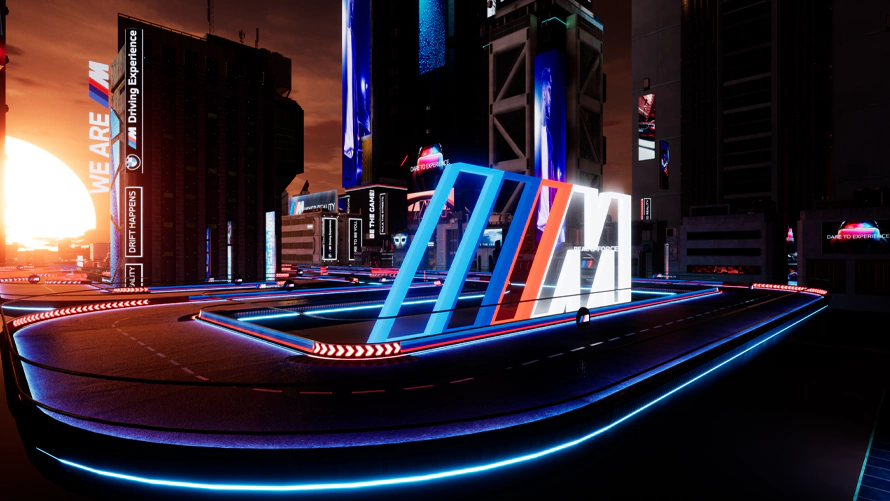

Compacto
Diseño
Potencia concentrada en un diseño compacto y ágil. Su carrocería musculosa y líneas aerodinámicas no solo capturan miradas, sino que también optimizan su rendimiento. Con un perfil bajo y una postura ancha, el 1M domina la carretera con una presencia imponente que belmente contradice su tamaño compacto. Cada curva y ángulo ha sido meticulosamente diseñado para maximizar la eficiencia aerodinámica, permitiendo que este coupé deportivo se deslice por el aire con mínima resistencia. El 1M es la prueba viviente de que la grandeza no siempre viene en paquetes grandes - es un titán de rendimiento envuelto en un chasis compacto y elegante.


Elegante
Ruedas
Las ruedas del BMW 1M son una obra maestra de ingeniería y diseño. Equipado con llantas de aleación M de 19 pulgadas, estas ruedas no son solo un complemento visual, sino una parte integral del rendimiento del vehículo. Su diseño ligero contribuye a reducir el peso no suspendido, mejorando la agilidad y la respuesta del coche. Los radios distintivos no solo aportan un toque de elegancia deportiva, sino que también optimizan el flujo de aire para una mejor refrigeración de los frenos. Con su combinación perfecta de estilo y funcionalidad, estas ruedas son el punto de contacto ideal entre el asfalto y la bestia que es el BMW 1M. Son, en esencia, donde la potencia se encuentra con la carretera.
La fachada
Frontal
Dominado por la icónica parrilla doble de BMW, el frente del 1M irradia agresividad y deportividad. Las amplias tomas de aire no solo aportan un aspecto amenazador, sino que también son funcionales, alimentando el potente motor que late bajo el capó. Los faros afilados, con su característica tecnología LED, cortan la oscuridad con la misma precisión con la que el coche corta el aire. Cada línea y curva del frontal ha sido diseñada no solo para impresionar visualmente, sino también para optimizar la aerodinámica. El splitter delantero, un elemento clave del paquete aerodinámico, mejora la estabilidad a altas velocidades.


Luminocidad plena
Luces
Las luces del BMW M1 son una mezcla de tecnología y diseño. Las luces LED, con su brillante y eficiente iluminación, proporcionan una visibilidad excepcional, incluso en las condiciones más difíciles. Además, las luces de xenón, con su intensa luz blanca, ofrecen una visibilidad clara y nítida, incluso en las noches más oscuras.

Compacto

pero con un diseño aerodinámico que te deja loco